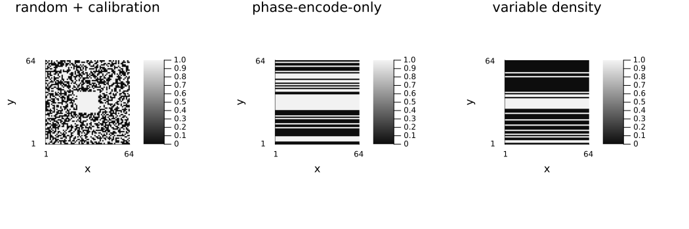
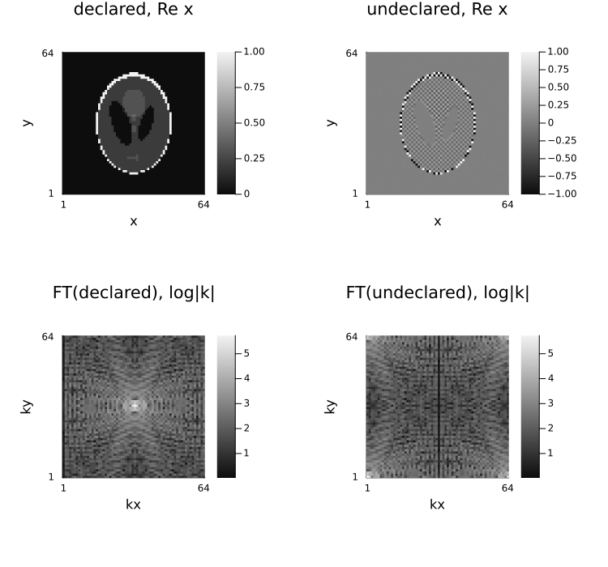
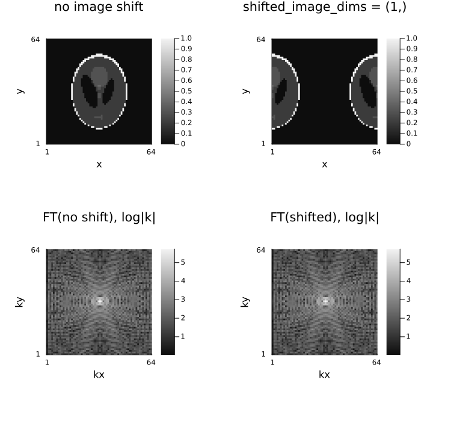

2 — AcquisitionInfo: describing the acquisition
Download this tutorial as a Jupyter notebook (with NotebookUtils.jl next to it).
AcquisitionInfo is the validated container that every other part of Ristretto consumes: it holds the k-space data, the sensitivity maps, the image size, the sampling pattern and the FFT-shift conventions, and it checks them against each other at construction time.
Contents
- Constructing it (plain arrays, named dimensions, no data at all)
- Sensitivity maps and the dimension order rules
- Subsampling patterns
- FFT-shift conventions
- What the validation catches
- Copy constructors
- Cartesian vs. non-Cartesian
- Getting the operators back out
using .NotebookUtils
using Ristretto
using NamedDims
using Ristretto: get_encoding_operator, get_fourier_operator,
get_sensitivity_map_operator, get_subsampling_operator
using GeometricMedicalPhantoms: create_shepp_logan_phantom, MRISheppLoganIntensities
using Random
using MIRTjim: jim
using FFTW: ifftshift, fftshift, fft
Random.seed!(0);1. Constructing it
The first (positional) argument is the k-space data. It can be a plain array, a NamedDimsArray, or nothing when the acquisition has not happened yet.
With a plain array — or with no data at all — is3D has to be stated: Ristretto cannot tell a 3D volume from a multi-slice 2D stack by shape alone, and with no data there is not even a shape to go on.
ksp_plain = rand(ComplexF32, 64, 64, 8)
AcquisitionInfo(ksp_plain; is3D = false)CartesianAcquisitionInfo:
- kspace data = Array{ComplexF32}<64×64×8>
- encoding = 2D
- image size = 64×64# With named dimensions, `is3D` is inferred from the presence of `:kz`.
ksp_named = NamedDimsArray{(:kx, :ky, :coil)}(rand(ComplexF32, 64, 64, 8))
AcquisitionInfo(ksp_named)CartesianAcquisitionInfo:
- kspace data = Array{ComplexF32}<kx: 64, ky: 64, coil: 8>
- encoding = 2D
- image size = 64×64ksp_3d = NamedDimsArray{(:kx, :ky, :kz, :coil)}(rand(ComplexF32, 32, 32, 16, 4))
AcquisitionInfo(ksp_3d)CartesianAcquisitionInfo:
- kspace data = Array{ComplexF32}<kx: 32, ky: 32, kz: 16, coil: 4>
- encoding = 3D
- image size = 32×32×16# No data yet — the configuration a simulation starts from.
AcquisitionInfo(nothing; is3D = false, image_size = (128, 128))CartesianAcquisitionInfo:
- encoding = 2D
- image size = 128×1282. Sensitivity maps
Sensitivity maps must match the spatial dimensions and the element type of the k-space:
| encoding | k-space | maps |
|---|---|---|
| 2D | (kx, ky, coil[, slice]) | (x, y, coil[, slice]) |
| 3D | (kx, ky, kz, coil) | (x, y, z, coil) |
smaps = coil_sensitivities(64, 64, 8)
acq = AcquisitionInfo(rand(ComplexF32, 64, 64, 8); is3D = false, sensitivity_maps = smaps)CartesianAcquisitionInfo:
- kspace data = Array{ComplexF32}<64×64×8>
- encoding = 2D
- image size = 64×64
- sensitivity maps = ComplexF32<64×64×8># 2D multi-slice: the slice dimension comes *after* the coil dimension.
ksp_ms = rand(ComplexF32, 64, 64, 4, 10) # 4 coils, 10 slices
smaps_ms = rand(ComplexF32, 64, 64, 4, 10)
AcquisitionInfo(ksp_ms; is3D = false, sensitivity_maps = smaps_ms)CartesianAcquisitionInfo:
- kspace data = Array{ComplexF32}<64×64×4×10>
- encoding = 2D
- image size = 64×64
- sensitivity maps = ComplexF32<64×64×4×10># 3D volume.
ksp_vol = rand(ComplexF32, 32, 32, 16, 4)
smaps_vol = rand(ComplexF32, 32, 32, 16, 4)
AcquisitionInfo(ksp_vol; is3D = true, sensitivity_maps = smaps_vol)CartesianAcquisitionInfo:
- kspace data = Array{ComplexF32}<32×32×16×4>
- encoding = 3D
- image size = 32×32×16
- sensitivity maps = ComplexF32<32×32×16×4>3. Subsampling patterns
subsampling accepts a boolean mask, a tuple of per-dimension patterns, index vectors, or the tuple create_sampling_pattern returns. When k-space is compacted to the acquired samples, image_size has to be given because it can no longer be inferred.
mask = rand(Bool, 64, 64)
mask[25:40, 25:40] .= true # fully sampled centre
AcquisitionInfo(nothing; is3D = false, image_size = (64, 64), subsampling = mask)CartesianAcquisitionInfo:
- encoding = 2D
- image size = 64×64
- subsampling = Array{Bool}<64×64># The realistic Cartesian case: the full readout is acquired, phase encodes are undersampled.
mask_ky = rand(Bool, 64)
mask_ky[28:36] .= true
AcquisitionInfo(nothing; is3D = false, image_size = (64, 64), subsampling = (:, mask_ky))CartesianAcquisitionInfo:
- encoding = 2D
- image size = 64×64
- subsampling = (:, Vector{Bool}<64>)# `create_sampling_pattern` returns exactly such a tuple.
pattern = create_sampling_pattern(VariableDensitySampling(PolynomialDistribution(3), 3.0), (64, 64))
println(typeof(pattern))
AcquisitionInfo(nothing; is3D = false, image_size = (64, 64), subsampling = pattern)CartesianAcquisitionInfo:
- encoding = 2D
- image size = 64×64
- subsampling = (:, Vector{Bool}<64>)# A plain Julia range works too, anywhere an index vector does — a regular undersampling
# pattern needs no mask array at all.
AcquisitionInfo(nothing; is3D = false, image_size = (64, 64), subsampling = (:, 1:2:64))CartesianAcquisitionInfo:
- encoding = 2D
- image size = 64×64
- subsampling = (:, 1:2:63)# 3D mask.
mask_3d = rand(Bool, 32, 32, 16)
mask_3d[13:20, 13:20, 5:12] .= true
AcquisitionInfo(nothing; is3D = true, image_size = (32, 32, 16), subsampling = mask_3d)CartesianAcquisitionInfo:
- encoding = 3D
- image size = 32×32×16
- subsampling = Array{Bool}<32×32×16># The three 2D patterns above, visualized: fully-random-with-calibration-region, the realistic
# phase-encode-only mask, and the polynomial variable-density pattern.
mask_ky_2d = falses(64, 64)
mask_ky_2d[:, mask_ky] .= true
pattern_2d = falses(64, 64)
pattern_2d[pattern...] .= true
side_by_side(
mask, mask_ky_2d, pattern_2d;
titles = ("random + calibration", "phase-encode-only", "variable density"),
)
4. FFT-shift conventions
Ristretto assumes DC sits at the centre of the array (k-space parts on mriquestions.com is the physical picture). Data that comes off a scanner unshifted (DC at index 1), or that needs an image-space shift, is declared rather than pre-processed: the shift is folded into the Fourier operator.
The reason it is a declaration rather than a preprocessing step is that only one of the two shifts can be applied as preprocessing in general:
shifted_kspace_dimssays the k-space array isifftshifted. Undoing that on the data means circularly shifting the array, which presupposes a full Cartesian grid. A subsampled acquisition stored as the acquired samples only has no grid to rotate, and a non-Cartesian acquisition has no grid at all.shifted_image_dimsis a half-FOV shift of the image, which on the data side is a sign alternation — elementwise, per sample, and therefore applicable to any Cartesian acquisition, sampled or not, once each sample's k-index is known. (Its non-Cartesian generalization is a per-sample linear phase ramp.)
Folding both into the operator makes the two uniform, which is why AcquisitionInfo takes them as descriptions of what the data means instead of rewriting the data.
ksp = rand(ComplexF32, 64, 64)
# DC already at the first index in both encoded dimensions
AcquisitionInfo(ksp; is3D = false, shifted_kspace_dims = (1, 2))CartesianAcquisitionInfo:
- kspace data = Array{ComplexF32}<64×64>
- encoding = 2D
- image size = 64×64
- shifted kspace dims = (1,2)A shift declaration changes what the array means, not the numbers in it, so it is only visible once something acts on the data. Below, the same phantom's k-space is reconstructed in both conventions: ksp_dc1 genuinely has DC at index 1, and is reconstructed once declaring that and once forgetting to.
The trap is that the magnitude images are identical. Leaving the shift undeclared multiplies the reconstructed image by $(-1)^{i+j}$, and a sign flip does not change $|x|$ — so a magnitude-only look at the result says nothing is wrong. It shows up wherever the sign survives — in the real part, which the checkerboard turns from a smooth image into an alternating one — and in the k-space of the reconstruction: modulating the image by $(-1)^{i+j}$ shifts its transform by half the array, which is what the two right-hand panels show. Anything that touches the phase or the reconstructed k-space — partial Fourier, field-map correction, flow, any k-space-domain method — is then silently wrong.
x_shift_demo = create_shepp_logan_phantom(64, 64, :axial; ti = MRISheppLoganIntensities(), eltype = ComplexF32)
acq_centred = simulate_acquisition(x_shift_demo, AcquisitionInfo(nothing; is3D = false, image_size = (64, 64)); keep_sensitivity_maps = true)
ksp_dc1 = ifftshift(unname(acq_centred.kspace_data)) # move the centre of k-space to index (1, 1)
x_declared = reconstruct(AcquisitionInfo(ksp_dc1; is3D = false, shifted_kspace_dims = (1, 2)))
x_forgotten = reconstruct(AcquisitionInfo(ksp_dc1; is3D = false))
spectrum(x) = log1p.(abs.(fftshift(fft(unname(x)))))
println("magnitudes agree: ", isapprox(abs.(unname(x_declared)), abs.(unname(x_forgotten))))
# Built panel by panel rather than through `side_by_side`, for two reasons: the real parts and the
# log-spectra are not in the same units, so each panel has to carry its own colour scale (one
# shared scale flattens the real-part panels, which are exactly the ones the point rests on), and
# the two spectra are k-space panels, so they are labelled kx/ky while the image panels are not.
jim(
jim(real.(unname(x_declared)); title = "declared, Re x"),
jim(real.(unname(x_forgotten)); title = "undeclared, Re x"),
jim(spectrum(x_declared); title = "FT(declared), log|k|", kaxes...),
jim(spectrum(x_forgotten); title = "FT(undeclared), log|k|", kaxes...);
layout = (2, 2), size = (750, 700),
)
shifted_image_dims is the mirror statement: the image the data corresponds to is centred at index 1 along those dimensions rather than in the middle. Declaring it on data that is in fact centred moves the reconstructed object by half the FOV along each declared dimension — exactly the artefact the declaration exists to undo when the data really does have that convention.
x_no_shift = reconstruct(acq_centred)
x_img_shift = reconstruct(AcquisitionInfo(acq_centred; shifted_image_dims = (1,)))
# Per-panel colour scales again: the two images run 0 to 1 and the two log-spectra 0 to about 10,
# so one shared scale would squash the images into the bottom tenth of the colour map and leave
# them looking uniformly dark.
jim(
jim(x_no_shift; title = "no image shift"),
jim(x_img_shift; title = "shifted_image_dims = (1,)"),
jim(spectrum(x_no_shift); title = "FT(no shift), log|k|", kaxes...),
jim(spectrum(x_img_shift); title = "FT(shifted), log|k|", kaxes...);
layout = (2, 2), size = (750, 700),
)
# With named dimensions the shifts are named too.
ksp_n = NamedDimsArray{(:kx, :ky)}(rand(ComplexF32, 64, 64))
AcquisitionInfo(ksp_n; shifted_kspace_dims = (:kx, :ky))CartesianAcquisitionInfo:
- kspace data = Array{ComplexF32}<kx: 64, ky: 64>
- encoding = 2D
- image size = 64×64
- shifted kspace dims = (kx,ky)5. What the validation catches
Everything below throws at construction time rather than producing a wrong image later.
# Image-space names on k-space data
try
AcquisitionInfo(NamedDimsArray{(:x, :y, :coil)}(rand(ComplexF32, 64, 64, 8)))
catch e
println("Error: ", e.msg)
endError: k-space must have :kx and :ky dimensions
:kx ∈ ksp_dimnames && :ky ∈ ksp_dimnames must hold.# Dimensions in the wrong order
try
AcquisitionInfo(NamedDimsArray{(:ky, :kx, :coil)}(rand(ComplexF32, 64, 64, 8)))
catch e
println("Error: ", e.msg)
endError: first dims must be :kx, :ky
ksp_dimnames[1] == :kx && ksp_dimnames[2] == :ky must hold.# Sensitivity maps of a different size
try
AcquisitionInfo(
rand(ComplexF32, 64, 64, 8);
is3D = false, sensitivity_maps = rand(ComplexF32, 128, 128, 8)
)
catch e
println("Error: ", e.msg)
endError: sensitivity maps and image spatial dimensions size mismatch for 2D acquisition
(size(smaps))[1:2] == img_size must hold. Got
(size(smaps))[1:2] => (128, 128)
img_size => (64, 64)# Mixed precision between k-space and maps
try
AcquisitionInfo(
rand(ComplexF32, 64, 64, 8);
is3D = false, sensitivity_maps = rand(ComplexF64, 64, 64, 8)
)
catch e
println("Error: ", e.msg)
endError: k-space and sensitivity maps eltype mismatch
eltype(ksp) == eltype(smaps) must hold. Got
eltype(ksp) => ComplexF32
eltype(smaps) => ComplexF64# Subsampling without an image size
try
AcquisitionInfo(nothing; is3D = false, subsampling = rand(Bool, 64, 64))
catch e
println("Error: ", e.msg)
endError: image_size must be provided or inferable from subsampling or sensitivity maps
!(isnothing(img_size)) must hold. Got
isnothing(img_size) => true6. Copy constructors
AcquisitionInfo(info; kwargs...) returns a new, re-validated configuration with the named fields replaced — the way to add sensitivity maps, swap in noisy k-space, or change the sampling pattern without rebuilding everything.
info = AcquisitionInfo(rand(ComplexF32, 64, 64, 8); is3D = false)
info_with_maps = AcquisitionInfo(info; sensitivity_maps = coil_sensitivities(64, 64, 8))CartesianAcquisitionInfo:
- kspace data = Array{ComplexF32}<64×64×8>
- encoding = 2D
- image size = 64×64
- sensitivity maps = ComplexF32<64×64×8>noisy = info_with_maps.kspace_data .+ 0.01f0 .* randn(ComplexF32, size(info_with_maps.kspace_data))
AcquisitionInfo(info_with_maps; kspace_data = noisy)CartesianAcquisitionInfo:
- kspace data = Array{ComplexF32}<64×64×8>
- encoding = 2D
- image size = 64×64
- sensitivity maps = ComplexF32<64×64×8>7. Cartesian vs. non-Cartesian
AcquisitionInfo is an abstract type and also a constructor that dispatches on its keywords: pass a trajectory and you get a NonCartesianAcquisitionInfo, otherwise a CartesianAcquisitionInfo. Neither concrete type is exported — both are public, so both can be dispatched on and named, but only after an explicit import (using Ristretto: CartesianAcquisitionInfo). Nothing needs them: every acquisition is built through the AcquisitionInfo(...) dispatch, and the concrete type is what comes back. 08_non_cartesian.md builds one from a radial trajectory.
8. Getting the operators back out
Every operator Ristretto would build internally is available from the configuration. These names are public but not exported, so they have to be imported explicitly.
The encoding operator is the composition of the other three,
\[\mathcal{A} = \mathcal{P}\,\mathcal{F}\,\mathcal{S},\]
read right to left: $\mathcal{S}$ multiplies the image by each coil sensitivity, $\mathcal{F}$ transforms every channel to k-space, and $\mathcal{P}$ keeps the acquired samples. The three are exactly the three physical steps between an image and a measurement, and the sizes printed below chain accordingly — $\mathcal{A}$'s domain is $\mathcal{S}$'s, its codomain $\mathcal{P}$'s. Whichever piece an acquisition does not have drops out: no sensitivity maps, no $\mathcal{S}$; no subsampling, no $\mathcal{P}$. (get_encoding_operator builds the composition directly, so 𝒜 is not literally 𝒫 * ℱ * 𝒮 as a Julia object — but it is that map.)
mask_acq = rand(Bool, 64, 64)
mask_acq[28:36, 28:36] .= true
acq_ops = AcquisitionInfo(
rand(ComplexF32, sum(mask_acq), 8);
is3D = false,
image_size = (64, 64),
subsampling = (mask_acq,),
sensitivity_maps = coil_sensitivities(64, 64, 8),
)
𝒜 = get_encoding_operator(acq_ops)
ℱ = get_fourier_operator(acq_ops)
𝒮 = get_sensitivity_map_operator(acq_ops)
𝒫 = get_subsampling_operator(acq_ops)
# size(op) is (codomain, domain) — matrix convention — so domain → codomain reads naturally.
println("𝒜 : ", size(𝒜)[2], " → ", size(𝒜)[1])
println("ℱ : ", size(ℱ)[2], " → ", size(ℱ)[1])
println("𝒮 : ", size(𝒮)[2], " → ", size(𝒮)[1])
println("𝒫 : ", size(𝒫)[2], " → ", size(𝒫)[1])𝒜 : (64, 64) → (2130, 8)
ℱ : (64, 64, 8) → (64, 64, 8)
𝒮 : (64, 64) → (64, 64, 8)
𝒫 : (64, 64, 8) → (2130, 8)# The forward model, applied by hand — and the composition spelled out: applying the three
# operators in turn gives the same measurement as applying 𝒜.
img = rand(ComplexF32, 64, 64)
y = 𝒜 * img
x̂ = 𝒜' * y
println("𝒜 (forward): ", size(img), " → ", size(y))
println("𝒜' (adjoint): ", size(y), " → ", size(x̂))
println("𝒜 x == 𝒫(ℱ(𝒮 x)): ", isapprox(unname(y), unname(𝒫 * (ℱ * (𝒮 * img)))))𝒜 (forward): (64, 64) → (2130, 8)
𝒜' (adjoint): (2130, 8) → (64, 64)
𝒜 x == 𝒫(ℱ(𝒮 x)): trueFurther reading
Background on the physics this tutorial's bookkeeping describes, from Questions and Answers in MRI:
- What is k-space? — the measurement domain
kspace_dataholds. - k-space: parts — why DC belongs at the centre, and what the periphery carries (§4 above).
- k-space: data — how the samples get there, and what a phase encode is (§3).
- Parallel imaging — what the sensitivity maps of §2 are for.
Environment
print_versions()Julia Version 1.13.1
Commit 96ca370cf0e (2026-09-25 19:34 UTC)
Build Info:
Official https://julialang.org release
Platform Info:
OS: Linux (x86_64-linux-gnu)
CPU: 4 × AMD EPYC 9V74 80-Core Processor
WORD_SIZE: 64
LLVM: libLLVM-20.1.8 (ORCJIT, znver4)
GC: Built with stock GC
Threads: 2 default, 1 interactive, 2 GC (on 4 virtual cores)
Environment:
JULIA_PKG_SERVER_REGISTRY_PREFERENCE = eager
JULIA_NUM_THREADS = 2
Ristretto 0.1.0 (dev)
AbstractOperators not loaded
FFTWOperators not loaded
NFFTOperators not loaded
WaveletOperators not loaded
DSPOperators not loaded
ContourletOperators not loaded
StructuredOptimization not loaded
ProximalOperators not loaded
ProximalAlgorithms not loaded
OperatorCore not loaded
NestedThreading 0.1.2